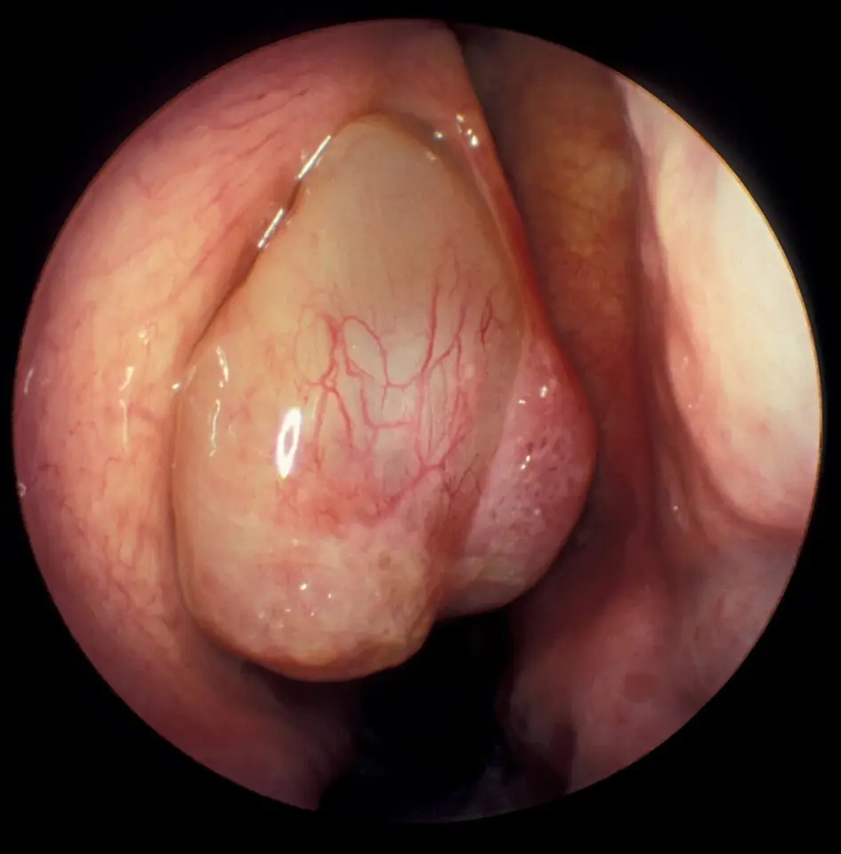

Écoulement nasal — S1.14
DX.7 — Rhinosinusite chronique avec polypes
Situation clinique de départ : écoulement nasal ; ce diagnostic appartient à la Phase A du lot.
La rhinosinusite chronique avec polypes associe obstruction, écoulement et perte de l’odorat depuis au moins 12 semaines, avec des polypes visibles des deux côtésS2. Le médecin exclut d’abord les signes d’alarme et toute atteinte unilatérale, car ils annoncent une complication ou une tumeurS2. Il traite ensuite par rinçages et corticoïde intranasal, puis par chirurgie ou biothérapie selon des critères chiffrés et l’AIPS (information professionnelle suisse) de chaque moléculeS2AIPS 54189AIPS 66649.
Seules les sources citées fondent ce cours sur la rhinosinusite chronique avec polypes, qu’aucun médecin n’a encore validé cliniquement.
1. Définition
L’EPOS (European Position Paper on Rhinosinusitis and Nasal Polyps) définit en 2020 cette maladie comme une rhinosinusite chronique avec polypes bilatéraux visibles à l’endoscopie dans le méat moyenS2. La rhinosinusite chronique réunit, depuis au moins 12 semaines, deux symptômes ou plus, dont une obstruction nasale ou un écoulement antérieur ou postérieurS2. Les HUG (Hôpitaux universitaires de Genève) nomment ces polypes des excroissances inflammatoires bénignes de la muqueuse, ce qui en fait une forme particulière de rhinosinusite chroniqueS1.
2. Épidémiologie (Suisse, puis Europe)
En Suisse, les HUG estiment que la polypose nasale touche jusqu’à 3 % de la population, alors que la rhinosinusite chronique en touche jusqu’à 15 %S1. En Europe, la prévalence de la rhinosinusite chronique fondée sur les seuls symptômes varie de 5,5 à 28 %S2. Elle tombe cependant à 3 à 6 % lorsque l’endoscopie ou le scanner confirment la maladieS2. L’asthme atteint environ 25 % des patients avec rhinosinusite chronique, contre 5 % de la population générale, ce qui impose de le rechercherS2. La fenêtre chiffres utiles réunit ces données, classées par population, année et source.
Chiffres utiles de la polypose nasosinusienne
| Chiffre | Population | Année | Source |
|---|---|---|---|
| Polypose nasale : jusqu’à 3 % | Population suisse (HUG) | 2025 | S1 |
| Rhinosinusite chronique : jusqu’à 15 % | Population suisse (HUG) | 2025 | S1 |
| Rhinosinusite chronique symptomatique : 5,5 à 28 % | Population générale | 2020 | S2 |
| Rhinosinusite chronique confirmée par endoscopie ou scanner : 3 à 6 % | Population générale | 2020 | S2 |
| Asthme : environ 25 % contre 5 % | Rhinosinusite chronique contre population générale | 2020 | S2 |
| Insuffisance surrénalienne asymptomatique : 48 % | Polypose ayant reçu au moins 3 cures orales par an | 2020 | S3 |
| Ostéoporose : 54 % ; ostéopénie fémorale : 40,5 % | Même cohorte de polypose | 2020 | S3 |
La rhinosinusite chronique est plus fréquente chez le fumeur, et elle s’associe à la BPCO (bronchopneumopathie chronique obstructive), à l’hypogammaglobulinémie et au reflux gastro-œsophagienS2. Elle s’associe aussi à la maladie respiratoire exacerbée par les anti-inflammatoires non stéroïdiens, que l’EPOS nomme N-ERDS2. Chez l’enfant, la polypose apparaît habituellement peu, si bien qu’une polypose bilatérale doit faire évoquer une mucoviscidoseAIPS 66649S2.
La fenêtre comorbidités et traits traitables réunit les associations que l’EPOS demande de vérifier à chaque étape.
Comorbidités et traits traitables
| Association | Ce que l’on cherche | Conséquence pratique | Source |
|---|---|---|---|
| Asthme | Toux, sifflements, corticoïdes inhalés | Critère de biothérapie s’il exige un traitement régulier | S2 |
| N-ERD | Aggravation après aspirine ou anti-inflammatoire | Éviction et désensibilisation discutée | S2S5 |
| Tabagisme | Consommation actuelle | Arrêt, car la maladie est plus fréquente chez le fumeur | S2 |
| Exposition professionnelle, pollution | Métier, environnement | Réduction de l’exposition | S2 |
| Hypogammaglobulinémie | Infections répétées | Bilan immunologique | S2 |
| Reflux gastro-œsophagien, BPCO | Symptômes digestifs ou respiratoires | Traitement propre | S2 |
| Allergie | Sensibilisation par prick-test ou IgE | Fréquence variable selon le phénotype | S2 |
| Mucoviscidose | Polypose bilatérale de l’enfant | Tests de mucoviscidose | S2 |
3. Physiopathologie
Chez le patient atteint, des agents microbiens franchissent la barrière muqueuse, ce qui entretient une inflammation chronique qui ne se résout pasS2. Cette inflammation suit les voies de type 1, 2 ou 3, seules ou combinées, puis elle remodèle les tissus et produit les symptômesS2. L’inflammation de type 2 se caractérise par les cytokines IL-4, IL-5 et IL-13 (interleukines 4, 5 et 13), ainsi que par l’afflux d’éosinophiles et de mastocytesS2. La fenêtre base à connaître montre un polype réel, annoté repère par repère.
Base à connaître : le polype vu en endoscopie
Polype nasal en endoscopie : Mustafakapadiya a publié cette photographie endoscopique en couleurs, sous licence CC BY-SA 4.0S6.

- La masse lisse, translucide et jaune grisâtre correspond au polype, une excroissance inflammatoire bénigne de la muqueuse.
- Les fins vaisseaux rouges courent à la surface du polype, qui reste donc une muqueuse œdémateuse et non une tumeur dure.
- La zone noire résiduelle montre le peu d’air qui passe encore, ce qui explique l’obstruction nasale.
- Le piège consiste à conclure sur un seul côté, car la définition exige des polypes bilatéraux et une lésion unilatérale impose un avis spécialisé.
Le patient de type 2 résiste davantage aux traitements actuels, car il récidive plus souvent que le patient de type 1 ou 3S2. Les biothérapies qui freinent le type 2 réduisent aussi la taille des polypes, ce qui suggère un lien de cause à effet avec le remodelageS2. La perte de l’odorat résulte en partie de l’obstruction de la fente olfactive, si bien que la chirurgie ne la corrige pas chez tousS2. La fenêtre corrélation mécanisme–examen–traitement relie chaque perturbation à son examen et à son traitement.
Corrélation : mécanisme, signe, examen et traitement
| Perturbation | Signe | Examen qui la montre | Traitement qui la corrige | Source |
|---|---|---|---|---|
| Œdème muqueux en polypes | Obstruction bilatérale | Endoscopie du méat moyen | Corticoïde intranasal, chirurgie | S2 |
| Obstruction de la fente olfactive | Perte de l’odorat | Test d’olfaction | Corticoïde, biothérapie ; chirurgie inconstante | S2 |
| Infiltrat éosinophile | Forme sévère et récidivante | Histologie : au moins 10 éosinophiles par champ au fort grossissement | Biothérapie anti-type 2 | S2 |
| Cytokines IL-4 et IL-13 | Polypes, asthme associé | Éosinophiles sanguins, IgE totales | Dupilumab | S2AIPS 66649 |
| Cytokine IL-5 | Éosinophilie | Éosinophiles sanguins | Mépolizumab | S2AIPS 67350 |
| Atteinte de toute la muqueuse sinusienne | Opacités multiples | Scanner, score de Lund-Mackay | Chirurgie endoscopique complète | S2S4 |
L’EPOS répartit les rhinosinusites chroniques primaires selon leur distribution, localisée ou diffuse, puis selon la dominance de l’endotype, de type 2 ou nonS2. La polypose diffuse appartient ainsi au groupe diffus de type 2, à côté de la forme fongique allergique et de la maladie allergique du compartiment centralS2. La fenêtre profils de type 2 et non de type 2 indique leurs plaintes, leurs examens et leurs traitementsS2.
Profils de type 2 et non de type 2 selon l’EPOS 2020
| Élément | Type 2 | Non de type 2 | Source |
|---|---|---|---|
| Plainte principale | Perte de l’odorat | Écoulement, douleur faciale ou obstruction | S2 |
| Comorbidités | N-ERD, asthme, atopie | Moins d’asthme, moins d’atopie | S2 |
| Endoscopie | Polypes, mucine éosinophile | Écoulement purulent | S2 |
| Biologie | IgE élevées, éosinophilie | IgE normales, pas d’éosinophilie | S2 |
| Traitement de base | Traitement médical approprié, avec ou sans cure orale | Traitement médical approprié, avec ou sans antibiotique au long cours | S2 |
| Traitement additionnel | Biothérapie, désensibilisation si N-ERD, décroissance orale, reprise chirurgicale | Rinçages au xylitol, antibiotique au long cours, reprise chirurgicale | S2 |
Le profil de type 2 oriente donc vers la biothérapie, tandis que le profil non de type 2 n’y donne pas accès selon les critères actuelsS2.
La forme fongique allergique touche plutôt le patient jeune, atopique et asthmatique vivant en climat chaud et humide, avec un prick-test positif aux champignonsS2. Elle exige une chirurgie adaptée, parfois étendue, afin de retirer tous les débris, puis des rinçages et un corticoïde nasalS2.
4. Démarche diagnostique
Le médecin cherche d’abord les signes d’alarme de l’EPOS, car ils imposent un transfert immédiat vers le spécialisteS2. Il adresse ensuite toute atteinte unilatérale au spécialiste, puisque le scanner devient urgent dès qu’une tumeur est suspectéeS2. Il recherche enfin une forme secondaire, car saignement, croûtes, douleur sévère, perte tissulaire ou atteinte d’autres organes orientent vers une vasculariteS2. La fenêtre diagnostics à distinguer oppose les diagnostics par l’élément qui tranche, le piège et la conduite.
Diagnostics à distinguer de la polypose nasosinusienne
| Diagnostic | Élément qui tranche | Piège | Conduite | Source |
|---|---|---|---|---|
| 🚩 Tumeur maligne nasosinusienne (DX.10) | Atteinte unilatérale, saignement | Prendre une masse unilatérale pour un polype banal | Scanner urgent et avis spécialisé | S2 |
| 🚩 Complication orbitaire ou intracrânienne | Œdème périorbitaire, diplopie, signes méningés | Traiter en ambulatoire | Transfert immédiat | S2 |
| Rhinosinusite chronique sans polypes (DX.6) | Aucun polype visible au méat moyen, au besoin après décongestion | Conclure sans endoscopie | Voir le DX.6 | S2 |
| Rhinite allergique (DX.2) | Prurit, éternuements, rhinorrhée claire | Attribuer une anosmie à l’allergie | Endoscopie si obstruction rebelle | S5 |
| Vascularite (granulomatose avec polyangéite, granulomatose éosinophilique) | Croûtes, saignement, atteinte d’autres organes | Méconnaître une forme secondaire | Sérologies, biopsie, spécialiste | S2 |
| Rhinosinusite fongique allergique | Patient jeune, atopie, climat chaud et humide | Méconnaître une atteinte de l’orbite | IRM (imagerie par résonance magnétique), chirurgie étendue | S2 |
| Mucoviscidose | Polypose bilatérale de l’enfant | Traiter l’enfant comme un adulte | Tests de mucoviscidose | S2 |
5. Anamnèse ciblée et drapeaux rouges
L’entretien caractérise les symptômes cardinaux : obstruction, écoulement antérieur ou postérieur, douleur ou pression faciale et perte de l’odoratS2. Dans le profil de type 2, la plainte principale est souvent la perte de l’odorat, alors que l’écoulement ou la douleur domine le profil non de type 2S2. La fenêtre questions et leur raison relie chaque question à la décision qu’elle prépare.
Questions ciblées et leur raison
| Question | Raison | Source |
|---|---|---|
| Les symptômes durent-ils depuis 12 semaines ou plus ? | Le seuil de 12 semaines définit la forme chronique. | S2 |
| L’odorat est-il diminué ou perdu ? | La perte de l’odorat oriente vers le type 2 et compte parmi les critères de biothérapie. | S2 |
| Existe-t-il un asthme traité par corticoïdes inhalés ? | Un asthme régulièrement traité est un critère de biothérapie. | S2 |
| L’aspirine ou un anti-inflammatoire aggrave-t-il les symptômes ? | Une N-ERD ouvre la discussion d’une désensibilisation. | S2 |
| Combien de cures de corticoïdes oraux l’année passée ? | Deux cures ou plus par an signent un besoin de corticoïdes systémiques. | S2S3 |
| Une chirurgie des sinus a-t-elle déjà eu lieu ? | La biothérapie suppose en règle une chirurgie préalable. | S2 |
| Le sommeil ou l’énergie sont-ils perturbés ? | Ce retentissement entre dans l’évaluation du contrôle. | S2 |
| Fume-t-il, est-il exposé au travail ? | Tabac et exposition professionnelle aggravent les symptômes. | S2 |
| Les symptômes sont-ils d’un seul côté ? | Une atteinte unilatérale impose un bilan spécialisé. | S2S5 |
Les drapeaux rouges de l’EPOS se cherchent à chaque consultation, car ils signent une complication ou une autre maladieS2. La fenêtre drapeaux rouges relie chaque alarme de l’EPOS à sa signification et au transfert qu’elle impose.
Drapeaux rouges de l’EPOS 2020
| Drapeau rouge | Signification | Action immédiate | Source |
|---|---|---|---|
| 🚩 Œdème ou érythème périorbitaire, globe déplacé | Atteinte orbitaire | Transfert immédiat | S2 |
| 🚩 Diplopie, ophtalmoplégie, baisse de l’acuité visuelle | Menace visuelle | Transfert immédiat | S2 |
| 🚩 Céphalée sévère, tuméfaction frontale | Atteinte osseuse ou intracrânienne | Transfert immédiat | S2 |
| 🚩 Signes de sepsis, de méningite ou neurologiques | Complication grave | Transfert immédiat | S2 |
| 🚩 Symptômes unilatéraux, saignement, croûtes, cacosmie | Tumeur ou forme secondaire | Transfert immédiat et scanner | S2 |
6. Examen physique ciblé, région par région
L’examen procède du nez vers les organes voisins, car les complications touchent l’orbite, le front et l’encéphaleS2. Chaque région dispose de sa propre fenêtre, et le lecteur peut les ouvrir dans l’ordre réel de l’examen. Les fenêtres sont : nez : rhinoscopie et endoscopie, odorat, yeux et orbite, front et face, examen neurologique et méningé, thorax.
Examen — Nez : rhinoscopie et endoscopie
| Étape | Ce que l’on fait ou voit | Interprétation |
|---|---|---|
| Geste | Endoscopie nasale, au besoin après décongestion | L’EPOS en fait l’examen qui confirme la maladie. |
| Normal | Méat moyen libre | Il écarte une polypose visible. |
| Pathologique | Polypes bilatéraux, mucine éosinophile | Ils confirment le diagnostic et orientent vers le type 2. |
| Piège | Lésion d’un seul côté | Elle impose un scanner et un avis spécialisé. |
L’EPOS indique que l’endoscopie confirme la maladie, puis qu’elle distingue les formes localisées des formes diffusesS2.
Examen — Odorat
| Étape | Ce que l’on fait ou voit | Interprétation |
|---|---|---|
| Geste | Test d’olfaction standardisé | Le patient mesure mal sa propre perte. |
| Pathologique | Anosmie au test | Elle compte parmi les critères de biothérapie. |
| Piège | Perte persistante après chirurgie | La fente olfactive peut rester obstruée. |
L’EPOS rappelle que le patient perçoit mal sa perte d’odorat, d’où l’intérêt d’un test objectifS2.
Examen — Yeux et orbite
| Étape | Ce que l’on fait ou voit | Interprétation |
|---|---|---|
| Geste | Inspection des paupières, mobilité oculaire, acuité visuelle | Il dépiste la complication orbitaire. |
| Pathologique | Œdème périorbitaire, globe déplacé, diplopie, ophtalmoplégie | Ce sont des signes d’alarme de l’EPOS. |
| Conduite | Transfert immédiat | La vision est menacée. |
L’examen de l’orbite recherche les signes d’alarme qui figurent en tête du parcours de soins de l’EPOSS2.
Examen — Front et face
| Étape | Ce que l’on fait ou voit | Interprétation |
|---|---|---|
| Geste | Palpation du front et de la face | Il cherche une tuméfaction frontale. |
| Pathologique | Tuméfaction frontale, douleur sévère | Elle signe une complication ou une forme secondaire. |
| Conduite | Transfert immédiat | L’EPOS la classe parmi les alarmes. |
La palpation du front cherche la tuméfaction frontale, qui figure parmi les motifs de transfert immédiat de l’EPOSS2.
Examen — Examen neurologique et méningé
| Étape | Ce que l’on fait ou voit | Interprétation |
|---|---|---|
| Geste | Raideur de nuque, conscience, déficit focal | Il dépiste l’atteinte intracrânienne. |
| Pathologique | Signes méningés ou neurologiques | Ce sont des signes d’alarme. |
| Conduite | Transfert immédiat | Le pronostic vital est engagé. |
L’examen neurologique écarte une méningite ou un déficit, car l’EPOS les classe aussi parmi les alarmesS2.
Examen — Thorax
| Étape | Ce que l’on fait ou voit | Interprétation |
|---|---|---|
| Geste | Auscultation, débit de pointe | Il recherche l’asthme associé. |
| Pathologique | Sibilants | Ils orientent vers un asthme, fréquent dans le type 2. |
| Conduite | Exploration de l’asthme | Un asthme traité modifie l’indication de biothérapie. |
L’auscultation dépiste l’asthme, puisque l’EPOS l’associe fortement au profil de type 2S2.
7. Approche syndromique
Le tableau se décompose en cinq syndromes, car chacun appelle une conduite propreS2. La fenêtre syndromes sépare, pour chacun, les plaintes, les signes d’examen et le mécanisme en cause.
Syndromes de la polypose nasosinusienne
| Syndrome | Signes fonctionnels | Signes physiques | Mécanisme | Source |
|---|---|---|---|---|
| 7.1 Syndrome obstructif | Nez bouché la plupart des jours | Polypes du méat moyen | Œdème muqueux | S2 |
| 7.2 Syndrome sécrétoire | Rhinorrhée, écoulement postérieur, parfois mucopurulent | Sécrétions au méat moyen | Inflammation chronique | S2 |
| 7.3 Syndrome olfactif | Odorat diminué ou perdu | Anosmie au test | Fente olfactive obstruée | S2 |
| 7.4 Syndrome bronchique | Toux, sifflements, dyspnée | Sibilants | Asthme, N-ERD | S2 |
| 7.5 Syndrome d’alarme | Diplopie, céphalée sévère, baisse visuelle | Œdème périorbitaire, signes méningés | Complication | S2 |
8. Diagnostic positif et critères
Le diagnostic positif associe les critères symptomatiques de la rhinosinusite chronique et des polypes bilatéraux visibles à l’endoscopieS2. La fenêtre critères EPOS présente aussi le degré de contrôle et la forme difficile à traiterS2.
Critères EPOS 2020 : diagnostic, contrôle, forme difficile
| Élément | Critère | Source |
|---|---|---|
| Symptômes | Deux ou plus, dont obstruction ou écoulement ; douleur faciale et perte de l’odorat possibles | S2 |
| Durée | 12 semaines ou plus | S2 |
| Endoscopie | Polypes bilatéraux dans le méat moyen | S2 |
| Forme éosinophile | Au moins 10 éosinophiles par champ au grossissement 400 | S2 |
| Maladie contrôlée | Aucun symptôme gênant, odorat normal, muqueuse saine, aucun traitement de secours en 6 mois | S2 |
| Partiellement contrôlée | Au moins un critère présent | S2 |
| Non contrôlée | Trois critères ou plus, ou symptômes persistants malgré le traitement de secours | S2 |
| Difficile à traiter | Contrôle insuffisant malgré chirurgie, corticoïde intranasal et jusqu’à deux cures d’antibiotiques ou de corticoïdes systémiques par an | S2 |
Les symptômes seuls surestiment la maladie, car ils se recouvrent avec ceux des rhinites allergiques et non allergiquesS2. L’endoscopie distingue donc la forme avec polypes de la forme sans polypes, au besoin après une décongestion de la muqueuseS2.
9. Examens complémentaires
L’imagerie ne précède pas le traitement médical bien conduit, sauf en cas d’alarme ou d’atteinte unilatéraleS2.
9.a Gold standard
L’endoscopie nasale confirme la maladie, et elle atteint une forte corrélation avec le scanner, avec un coefficient de 0,85S2. Le scanner reste quant à lui l’examen de référence de l’évaluation radiologique, alors que les radiographies standard ne sont plus indiquéesS2. La fenêtre endoscopie précise l’indication, le geste et l’interprétation de chaque aspect observé dans le méat moyen.
Endoscopie nasale : indication et lecture
| Élément | Règle | Source |
|---|---|---|
| Indication | Soins secondaires, après échec du traitement de première ligne | S2 |
| Geste | Examen du méat moyen, au besoin après décongestion | S2 |
| Résultat positif | Polypes bilatéraux, sécrétions mucopurulentes ou muqueuse inflammatoire | S2 |
| Résultat orientant | Mucine éosinophile : profil de type 2 | S2 |
| Résultat d’alarme | Croûtes, saignement, perte tissulaire : forme secondaire | S2 |
9.b Première intention en soins secondaires : le scanner
Le scanner se demande lorsque le corticoïde nasal et les rinçages échouent, ou lorsqu’une chirurgie se prépareS2. Le score de Lund-Mackay cote au maximum 24 points, soit 12 par côté ; un score de 2 ou moins exclut presque la maladieS2. Un score de 5 ou plus indique au contraire une maladie réelle, avec une excellente valeur prédictive positiveS2. La fenêtre scanner résume la lecture du score et contient une image annotée repère par repère.
Scanner des sinus : lecture et score de Lund-Mackay
| Résultat | Signification | Conduite | Source |
|---|---|---|---|
| Score de Lund-Mackay ≤ 2 | Excellente valeur prédictive négative | Reconsidérer le diagnostic | S2 |
| Score ≥ 5 | Excellente valeur prédictive positive | Maladie confirmée | S2 |
| Score ≥ 1 après au moins 8 semaines de traitement bien conduit | Chirurgie appropriée selon un consensus | Discuter la chirurgie endoscopique | S2 |
| Atteinte unilatérale | Tumeur possible | Scanner urgent et avis spécialisé | S2 |
Scanner d’une rhinosinusite chronique : Mikael Häggström a publié ces deux coupes de scanner, en niveaux de gris par nature, sous licence CC0 (renonciation aux droits d’auteur)S7.

- La cavité sinusienne gauche de l’image, sur la coupe supérieure, est comblée par un tissu gris de densité molle.
- La cavité symétrique reste noire, donc aérée, ce qui sert de référence de normalité au lecteur.
- Sur la coupe inférieure, le sinus maxillaire gauche de l’image apparaît entièrement opacifié.
- Le sinus maxillaire controlatéral reste noir, si bien que l’asymétrie saute aux yeux.
- Le piège consiste à conclure sur une coupe isolée, alors que le score de Lund-Mackay cote chaque sinus des deux côtésS2.
9.c Alternatives
L’IRM avec contraste devient utile dans la rhinosinusite fongique allergique, car elle précise l’extension avant l’avis ophtalmologique et neurochirurgicalS2. Chez l’enfant avec polypose bilatérale, les tests de mucoviscidose, dont le test de la sueur, précèdent toute autre explorationS2.
9.d Deuxième intention : biomarqueurs et explorations ciblées
Les biomarqueurs du type 2 guident la biothérapie, même si aucun ne prédit encore la réponse au traitementS2. La fenêtre biomarqueurs et explorations indique les seuils, leur signification et la conduite qui en découle.
Biomarqueurs et explorations ciblées
| Examen | Seuil ou résultat | Signification | Conduite | Source |
|---|---|---|---|---|
| Éosinophiles tissulaires | ≥ 10 par champ au grossissement 400 | Inflammation de type 2 | Critère de biothérapie | S2 |
| Éosinophiles sanguins | ≥ 250 | Inflammation de type 2 | Critère de biothérapie | S2 |
| IgE totales | ≥ 100 | Inflammation de type 2 | Critère de biothérapie | S2 |
| SNOT-22 (Sino-Nasal Outcome Test à 22 items) | ≥ 40 | Qualité de vie très altérée | Critère de biothérapie | S2 |
| Test d’olfaction | Anosmie | Perte significative de l’odorat | Critère de biothérapie | S2 |
| Prick-test ou IgE spécifiques | Sensibilisation | Allergie associée | Éviction, traitement de l’allergie | S2 |
| Sérologies, biopsie | Vascularite | Forme secondaire | Spécialiste de la maladie causale | S2 |
10. Arbre décisionnel
L’arbre suit le parcours intégré de l’EPOS 2020, des signes d’alarme jusqu’à la biothérapieS2. La fenêtre arbre décisionnel contient les embranchements en liste imbriquée, de la consultation au choix du traitement additionnel.
Arbre décisionnel de la polypose nasosinusienne
- Si un signe d’alarme existe, le médecin adresse immédiatement le patient au spécialiste.
- Sinon, si l’atteinte est unilatérale, il demande un avis spécialisé et un scanner urgent lorsque la tumeur est possible.
- Sinon, il prescrit rinçages et corticoïde intranasal, puis contrôle après 6 à 12 semainesS2.
- Si le patient s’améliore, il poursuit le traitement et suit le contrôle.
- Sinon, le spécialiste réalise une endoscopie, puis un scanner, et recherche les traits traitables.
- Si les polypes sont bilatéraux et de profil de type 2, le spécialiste peut ajouter une cure courte de corticoïde oralS2.
- Si le contrôle reste insuffisant, il propose une chirurgie endoscopique complète, conformément au consensus EUFOREA–EPOS de 2026S4.
- Après chirurgie, une récidive avec trois critères réunis fait discuter une biothérapieS2.
- Sans réponse à 16 semaines selon l’EPOS, ou à 24 semaines selon l’AIPS, il envisage l’arrêtS2AIPS 66649.
- Si une N-ERD existe et que l’observance est sûre, il peut discuter une désensibilisation à l’aspirine.
Chaque nœud résume une règle de l’EPOS 2020, du consensus EUFOREA–EPOS de 2026 ou de l’AIPS citée au point 11S2S4AIPS 66649.
11. Prise en charge selon les recommandations suisses
11.A But
La maladie n’est généralement pas curable, si bien que le traitement vise le contrôle des symptômes selon les critères de l’EPOSS1S2. Le but chiffré reste une maladie contrôlée, sans traitement de secours durant les 6 derniers moisS2.
11.B Moyens
Le traitement médical approprié associe rinçages salins, corticoïde intranasal et éducation à la technique et à l’observanceS2. L’EPOS conseille l’eau salée isotonique ou le Ringer lactate, et il déconseille les solutions hypertoniques et le shampoing pour bébéS2. Le corticoïde intranasal réduit la taille des polypes, et il prévient leur récidive lorsqu’il suit une chirurgie endoscopiqueS2. L’AIPS de la mométasone fixe 400 µg par jour dans la polypose, puis 200 µg par jour une fois les symptômes contrôlésAIPS 54189.
Une à deux cures courtes de corticoïde systémique par an peuvent compléter le traitement nasal d’une maladie partiellement ou non contrôléeS2. L’effet sur la taille des polypes dure jusqu’à 3 mois, mais l’effet sur les symptômes a déjà disparu à ce termeS2. La prednisolone n’a pas la polypose parmi ses indications AIPS, de sorte que la cure reste hors AIPS et sans dose enseignée iciAIPS 38840. Le consensus EUFOREA–EPOS de 2026 n’accepte plus l’usage prolongé des corticoïdes systémiques, surtout lorsque des biothérapies existentS4.
Dans une cohorte de polypose avec au moins trois cures orales par an, 48 % des patients présentaient une insuffisance surrénalienne asymptomatiqueS3. Dans la même cohorte, l’ostéoporose touchait 54 % des patients et l’ostéopénie fémorale 40,5 %, ce qui impose de compter chaque cureS3. Une vaste étude cas-témoins britannique a aussi associé la prise orale de glucocorticoïdes à un risque accru de complication digestive haute, avec un rapport de cotes de 1,8S3.
Les antibiotiques courts ou prolongés n’ont pas d’effet démontré, et l’EPOS conseille donc de les éviter en soins primairesS2. Le montélukast ne s’ajoute pas au corticoïde nasal, sauf si le patient ne tolère pas ce dernierS2. Les antifongiques locaux ou systémiques et les probiotiques sont déconseillés, car ils n’améliorent ni les symptômes ni la qualité de vieS2. Un décongestionnant ne s’ajoute que brièvement, lorsque le nez est très bouché, au corticoïde intranasalS2.
La chirurgie endoscopique élargit les cavités sans guérir la maladie, mais elle donne de l’espace pour respirer et facilite ainsi les spraysS1. Le consensus de 2026 recommande au moins une chirurgie primaire complète dans la maladie diffuse, et il déconseille de débuter en même temps chirurgie et biothérapieS4. Selon une étude citée par l’EPOS, la chirurgie devient appropriée avec un score de Lund-Mackay d’au moins 1 et un traitement d’au moins huit semainesS2. Les implants imprégnés de corticoïde, posés dans l’ethmoïde après chirurgie, réduisent le besoin de nouvelle interventionS2.
La fenêtre rinçages salins précise les solutions utiles et celles que l’EPOS déconseille.
Rinçages salins : ce qui sert et ce qui ne sert pas
| Solution ou modalité | Avis de l’EPOS 2020 | Source |
|---|---|---|
| Sérum isotonique ou Ringer lactate | Efficace : à conseiller | S2 |
| Ajout de xylitol, de hyaluronate de sodium ou de xyloglucane | Effet positif possible | S2 |
| Grand volume plutôt que spray | Données insuffisantes pour le préférer | S2 |
| Shampoing pour bébé, solution hypertonique | Déconseillés en raison des effets indésirables | S2 |
| Miel, dexpanthénol, eau plus chaude ou plus salée | Aucun bénéfice supplémentaire | S2 |
La fenêtre chirurgie endoscopique résume son indication, son étendue et ce qu’elle ne corrige pas.
Chirurgie endoscopique des sinus
| Élément | Règle | Source |
|---|---|---|
| But | Ouvrir les sinus, donner de l’espace pour respirer et faciliter les sprays | S1 |
| Indication | Contrôle insuffisant malgré le traitement médical approprié | S1S2 |
| Seuil proposé | Score de Lund-Mackay ≥ 1 et au moins 8 semaines de corticoïde nasal avec une cure orale courte | S2 |
| Étendue | Au moins une chirurgie primaire complète dans la maladie diffuse | S4 |
| Après l’intervention | Corticoïde nasal poursuivi pour prévenir la récidive | S2 |
| Récidive | Implant imprégné de corticoïde, reprise chirurgicale ou biothérapie | S2 |
| Limite | Elle ne guérit pas la maladie ; l’odorat ne revient pas chez tous | S1S2 |
| Biothérapie simultanée | Non recommandée en l’état des preuves | S4 |
La biothérapie se discute lorsque des polypes bilatéraux persistent après chirurgie et que trois critères sur cinq sont réunisS2. La fenêtre biothérapie précise ces critères, leurs seuils et l’évaluation de la réponse au traitement.
Biothérapie : indication et évaluation de la réponse
| Critère | Seuil | Source |
|---|---|---|
| Inflammation de type 2 | Éosinophiles tissulaires ≥ 10 par champ, ou sanguins ≥ 250, ou IgE totales ≥ 100 | S2 |
| Besoin de corticoïdes systémiques ou contre-indication | ≥ 2 cures par an, ou faible dose au long cours au-delà de 3 mois | S2 |
| Qualité de vie très altérée | SNOT-22 ≥ 40 | S2 |
| Perte significative de l’odorat | Anosmie au test | S2 |
| Asthme associé | Asthme nécessitant des corticoïdes inhalés réguliers | S2 |
| Réponse | Nombre de critères améliorés | Conduite | Source |
|---|---|---|---|
| Excellente | 5 critères | Poursuivre | S2 |
| Modérée | 3 à 4 critères | Poursuivre et réévaluer | S2 |
| Faible | 1 à 2 critères | Réévaluer | S2 |
| Absente | 0 critère | Arrêter | S2 |
L’EPOS évalue la réponse à 16 semaines, alors que l’AIPS du dupilumab fixe l’arrêt envisagé à 24 semaines ; la conduite suit l’AIPS pour cette moléculeS2AIPS 66649.
Dans les études SINUS-24 et SINUS-52 du dupilumab, la congestion nasale et la perte de l’odorat se sont améliorées dès la première évaluation, à la semaine 4AIPS 66649. Ces effets restaient ainsi similaires chez les patients déjà opérés et chez ceux qui n’avaient jamais subi de chirurgie, selon l’AIPSAIPS 66649.
Chez le patient avec N-ERD, une désensibilisation suivie d’aspirine quotidienne peut se discuter lorsque l’observance est sûre, hors AIPS et sans dose enseignéeS2. Cette stratégie entraîne en effet des effets indésirables notables, et elle devient risquée si le patient oublie ses prises quotidiennesS2.
La fenêtre traitement structuré aligne les quatre molécules de la polypose, avec leur dose AIPS, leur durée, leur contrôle et leur critère d’échec.
Traitement structuré : molécule, dose AIPS, durée, contrôle, échec
| Molécule ® | Dose AIPS | Durée | Contrôle | Critère d’échec et conduite | Source |
|---|---|---|---|---|---|
| Mométasone, Nasonex® | Dès 18 ans : 2 pulvérisations par narine 2× par jour (400 µg par jour), puis 200 µg par jour une fois contrôléAIPS 54189 | Long cours ; après chirurgie aussi | Contrôle EPOS | Aucune amélioration après 5 à 6 semaines : changer de stratégie | AIPS 54189 |
| Prednisolone, Spiricort® | Polypose absente des indications : hors AIPS, aucune dose enseignée | 1 à 2 cures par an au plus selon l’EPOS | Os, glycémie, surrénales | 2 cures ou plus par an : critère de biothérapie | AIPS 38840S2S3 |
| Dupilumab, Dupixent® | Dès 18 ans : 300 mg sous-cutanés, puis 300 mg toutes les 2 semainesAIPS 66649 | Long cours | Réponse à 24 semaines | Aucune réponse à 24 semaines : envisager l’arrêt | AIPS 66649 |
| Mépolizumab, Nucala® | Dès 18 ans : 100 mg sous-cutanés toutes les 4 semainesAIPS 67350 | Long cours | Réponse à 16 semaines et à 1 an selon l’EPOS | Aucune réponse : arrêt | AIPS 67350S2 |
Les monographies sont : mométasone, prednisolone, dupilumab, mépolizumab.
Monographie — mométasone (Nasonex®) dans la polypose
| Indication AIPS | Le traitement des polypes nasaux chez l’adulte dès 18 ansAIPS 54189. |
|---|---|
| Dose AIPS | Deux pulvérisations 2× par jour dans chaque narine, soit 400 µg par jour, puis 200 µg par jour après contrôleAIPS 54189. |
| Échec | En l’absence d’amélioration après 5 à 6 semaines de traitement, l’AIPS demande d’envisager une autre stratégieAIPS 54189. |
| Contre-indications | « Hypersensibilité au principe actif ou à l'un des excipients conformément à la composition »AIPS 54189. |
| Grossesse | « Le traitement par des corticoïdes en application nasale pendant la grossesse et l'allaitement n'aura lieu qu'en cas d'absolue nécessité »AIPS 54189. |
| Allaitement | L’allaitement relève de la même exigence d’absolue nécessité dans l’AIPSAIPS 54189. |
Monographie — prednisolone (Spiricort®)
| Indication AIPS | L’AIPS cite les états allergiques graves et réfractaires, dont la rhinite allergique chronique grave, mais pas la polypose : la cure reste hors AIPSAIPS 38840. |
|---|---|
| Règle AIPS | L’AIPS demande toujours la dose thérapeutique la plus faible possible, et juge le traitement court jusqu’à 10 jours non critiqueAIPS 38840. |
| Contre-indications | « La préparation ne doit pas être utilisée en cas d'hypersensibilité à la prednisolone ou à l'un des excipients » ; ulcère, ostéoporose grave et diabète excluent l’usage prolongéAIPS 38840. |
| Grossesse | « Spiricort, comme tous les glucocorticoïdes, ne doit pas être administré durant la grossesse - en particulier, au cours des trois premiers mois, à moins que ceci ne soit absolument nécessaire »AIPS 38840. |
| Allaitement | « L'allaitement sera arrêté lors de l'utilisation systémique de corticostéroïdes »AIPS 38840. |
| Piège | Les cures répétées exposent à l’insuffisance surrénalienne et à l’ostéoporose, si bien que chaque cure doit être comptéeS3. |
Monographie — dupilumab (Dupixent®)
| Indication AIPS | Le traitement additionnel aux corticoïdes intranasaux de l’adulte avec polypose sévère, insuffisamment contrôlée par corticoïdes systémiques ou chirurgieAIPS 66649. |
|---|---|
| Dose AIPS | Une dose initiale de 300 mg, puis 300 mg toutes les deux semaines par voie sous-cutanéeAIPS 66649. |
| Durée | Le traitement est prévu au long cours, et son interruption s’envisage en l’absence de réponse après 24 semainesAIPS 66649. |
| Prescription | Un professionnel expérimenté dans les pathologies concernées doit initier le traitement et noter le numéro de lotAIPS 66649. |
| Contre-indications | « Hypersensibilité à la substance active ou à l'un des excipients répertoriés sous «Composition» »AIPS 66649. |
| Grossesse | « Le dupilumab ne doit pas être utilisé pendant la grossesse, sauf si le bénéfice potentiel justifie le risque potentiel encouru par le fœtus »AIPS 66649. |
| Allaitement | « Une décision doit être prise soit d'interrompre l'allaitement soit d'interrompre le traitement par dupilumab »AIPS 66649. |
Monographie — mépolizumab (Nucala®)
| Indication AIPS | Le traitement complémentaire aux corticoïdes nasaux de l’adulte dès 18 ans avec polypose sévère, insuffisamment contrôlée par corticoïdes systémiques intermittents ou chirurgieAIPS 67350. |
|---|---|
| Dose AIPS | La dose recommandée est de 100 mg par voie sous-cutanée une fois toutes les 4 semainesAIPS 67350. |
| Âge | La sécurité et l’efficacité n’ont pas été étudiées avant 18 ans dans cette indicationAIPS 67350. |
| Contre-indications | « Hypersensibilité au mépolizumab ou à l'un des excipients »AIPS 67350. |
| Grossesse | « Nucala ne doit pas être utilisé pendant la grossesse, sauf en cas de nécessité absolue »AIPS 67350. |
| Allaitement | « Il faut donc cesser soit l'allaitement soit le traitement par Nucala » après avoir pesé les bénéfices pour l’enfant et la mèreAIPS 67350. |
Une complication menace la vision ou la vie, et la fenêtre urgence — conduite chronologique ordonne les gestesS2.
Urgence — conduite chronologique
| Moment | Action | Raison | Source |
|---|---|---|---|
| Dès la consultation | Chercher œdème périorbitaire, globe déplacé, diplopie, baisse visuelle, céphalée sévère | Ce sont les alarmes de l’EPOS | S2 |
| Immédiatement si une alarme existe | Transférer vers le spécialiste, sans traitement d’épreuve | La vue ou la vie sont menacées | S2 |
| Si l’atteinte est unilatérale | Scanner urgent lorsqu’une tumeur est suspectée | Une tumeur ne répond pas au traitement médical | S2 |
| En cas de forme fongique avec atteinte orbitaire | IRM avec contraste, avis ophtalmologique et neurochirurgical | L’extension dépasse les sinus | S2 |
La fenêtre situations spéciales réunit la grossesse, l’allaitement, l’enfant, l’asthme et la N-ERD.
Situations spéciales
| Situation | Conduite | Source |
|---|---|---|
| Grossesse | Corticoïde nasal en cas d’absolue nécessité ; biothérapie seulement si le bénéfice justifie le risque ou en cas de nécessité absolue | AIPS 54189AIPS 66649AIPS 67350 |
| Allaitement | Choisir entre allaitement et biothérapie ; arrêter l’allaitement sous corticoïde systémique | AIPS 66649AIPS 38840 |
| Enfant | Polypose inhabituelle : tests de mucoviscidose ; aucune biothérapie autorisée avant 18 ans | S2AIPS 66649AIPS 67350 |
| Asthme associé | Le traiter ; il devient un critère de biothérapie s’il exige des corticoïdes inhalés réguliers | S2 |
| N-ERD | Désensibilisation à l’aspirine possible si l’observance est sûre, hors AIPS | S2 |
| Patient fumeur | Arrêt du tabac, qui aggrave les symptômes | S2 |
11.C Surveillance
Dès la prescription, le médecin planifie le suivi, et la fenêtre surveillance datée fixe le moment, le critère et l’action.
Surveillance datée
| Moment | Contrôle | Critère | Action | Source |
|---|---|---|---|---|
| 6 à 12 semaines | Effet des rinçages et du corticoïde nasal | Amélioration | Sinon, endoscopie et scanner | S2 |
| 5 à 6 semaines sous mométasone 400 µgAIPS 54189 | Taille des polypes, congestion | Amélioration | Sinon, autre stratégie | AIPS 54189 |
| À chaque cure orale | Nombre de cures dans l’année | 2 cures ou plus | Discuter chirurgie ou biothérapie | S2S3 |
| Après plusieurs cures | Os et axe surrénalien | Ostéoporose, insuffisance surrénalienne | Limiter les corticoïdes systémiques | S3 |
| 16 semaines de biothérapie | Cinq critères de réponse | Aucun critère amélioré | Arrêt selon l’EPOS | S2 |
| 24 semaines de dupilumab | Réponse clinique | Absence de réponse | Interruption envisagée selon l’AIPS | AIPS 66649 |
| 1 an de biothérapie | Cinq critères de réponse | Réponse faible | Réévaluer la poursuite | S2 |
| Après chirurgie | Corticoïde nasal poursuivi | Récidive endoscopique | Traitement additionnel | S2 |
11.D Pronostic
Le profil de type 2 récidive plus souvent, si bien que le patient doit connaître la chronicité de sa maladie dès le diagnosticS2. Les biothérapies anti-type 2 pourraient toutefois inverser le remodelage et limiter les récidives, ce qui modifierait l’évolution des formes sévèresS2. Le patient quitte le suivi spécialisé lorsque sa maladie reste contrôlée sans traitement de secours, avec un plan écrit en cas de récidiveS2.
12. Prévention
L’EPOS recommande d’éviter les facteurs d’aggravation, dont le tabac, la pollution de l’air et l’exposition professionnelleS2. La prévention secondaire repose sur le corticoïde nasal après chirurgie, car il prévient la récidive des polypesS2. La prévention tertiaire compte chaque cure de corticoïde systémique, puisque leur cumul expose à l’ostéoporose et à l’insuffisance surrénalienneS3. Le parcours de l’EPOS impose enfin de vérifier les traits traitables et les comorbidités, dont l’asthme, à chaque étapeS2.
13. Points clés
- La polypose exige des symptômes d’au moins 12 semaines et des polypes bilatéraux au méat moyenS2.
- Une atteinte unilatérale ou un signe d’alarme impose un transfert immédiat, sans traitement d’épreuve préalableS2.
- L’endoscopie confirme la maladie, et le scanner la mesure par le score de Lund-MackayS2.
- Rinçages isotoniques et corticoïde intranasal forment le traitement de base, à condition que la technique soit correcteS2.
- La mométasone se donne à 400 µg par jour dans la polypose, puis à 200 µg après contrôleAIPS 54189.
- Les cures orales se limitent à une ou deux par an, car leur cumul abîme l’os et les surrénalesS2S3.
- La biothérapie exige trois critères sur cinq, en règle après une chirurgie complèteS2S4.
- Le dupilumab s’arrête s’il n’y a pas de réponse à 24 semaines selon son AIPSAIPS 66649.
14. Pièges et questions fréquentes à l’examen fédéral suisse
Les pièges ci-dessous prennent la forme de questions courtes, et chaque réponse indique le point du cours qui la fonde.
| Question d’examen | Réponse | Point | Source |
|---|---|---|---|
| Un polype d’un seul côté relève-t-il de ce diagnostic ? | Non, il impose un avis spécialisé et parfois un scanner urgent. | 4 | S2 |
| Quelle durée définit la forme chronique ? | 12 semaines ou plus. | 1 et 8 | S2 |
| Faut-il une radiographie des sinus ? | Non, elle n’est plus indiquée. | 9 | S2 |
| Sous quel score de Lund-Mackay la maladie devient-elle très improbable ? | Un score de 2 ou moins. | 9 | S2 |
| Quelle dose AIPS de mométasone dans la polypose ? | 400 µg par jour, puis 200 µg après contrôleAIPS 54189. | 11 | AIPS 54189 |
| Combien de critères faut-il pour une biothérapie ? | Trois sur cinq. | 11 | S2 |
| Quel seuil de SNOT-22 compte comme critère ? | 40 ou plus. | 9 et 11 | S2 |
| Faut-il prescrire un antibiotique au long cours ? | Non, son effet reste incertain. | 11 | S2 |
| Une polypose bilatérale chez l’enfant évoque quoi ? | Une mucoviscidose. | 2 et 9 | S2 |
| Peut-on débuter en même temps chirurgie et biothérapie ? | Non, le consensus de 2026 le déconseille. | 11 | S4 |
Sources
- [S1] Hôpitaux universitaires de Genève (HUG), service d’ORL et de chirurgie cervico-faciale. Rhinosinusite aiguë et rhinosinusite chronique, page mise à jour le 23.04.2025. https://www.hug.ch/orl-chirurgie-cervico-faciale/rhinosinusite-aigue-rhinosinusite-chronique (consulté le 13.11.2026)
- [S2] Fokkens WJ, Lund VJ, Hopkins C, et al. Executive summary of EPOS 2020 including integrated care pathways. Rhinology 2020. https://www.rhinologyjournal.com/Documents/Supplements/EPOS2020_executive_summary.pdf (consulté le 13.11.2026)
- [S3] Hox V, Lourijsen E, Jordens A, et al. Benefits and harm of systemic steroids for short- and long-term use in rhinitis and rhinosinusitis: an EAACI position paper. Clin Transl Allergy 2020. https://pmc.ncbi.nlm.nih.gov/articles/PMC6941282/ (consulté le 13.11.2026)
- [S4] De Corso E, Hellings PW, Fokkens WJ, et al. Surgery and/or biologics in chronic rhinosinusitis with nasal polyps: EUFOREA/EPOS consensus paper. Rhinology 2026, résumé PubMed 42858259. https://pubmed.ncbi.nlm.nih.gov/42858259/ (consulté le 13.11.2026)
- [S5] Leroquais C, Länzlinger Y, et al., Hôpitaux universitaires de Genève (HUG). La rhinite allergique, stratégie 2023. https://www.hug.ch/sites/interhug/files/2023-09/strategie_rhinite_allergique_2023_avec_lien.pdf (consulté le 13.11.2026)
- [S6] Mustafakapadiya. Middle meatus polyp, photographie endoscopique, CC BY-SA 4.0, Wikimedia Commons. https://commons.wikimedia.org/wiki/File:Middle_meatus_polyp.jpg (consulté le 13.11.2026)
- [S7] Häggström M. CT of chronic sinusitis, CC0, Wikimedia Commons. https://commons.wikimedia.org/wiki/File:CT_of_chronic_sinusitis.jpg
- [AIPS 54189] Swissmedic, information professionnelle : Nasonex® spray doseur nasal (furoate de mométasone), Organon GmbH, n° d’autorisation 54189, mise à jour avril 2021. https://files.refdata.ch/simis-public-prod/MedicinalDocuments/05b407ec654940d49d928bbc54d8c05d-fr.html
- [AIPS 38840] Swissmedic, information professionnelle : Spiricort® (prednisolone), Spirig HealthCare AG, n° d’autorisation 38840, mise à jour juin 2026. https://files.refdata.ch/simis-public-prod/MedicinalDocuments/a16cd4d36b564816839b422425930530-fr.html
- [AIPS 66649] Swissmedic, information professionnelle : Dupixent® (dupilumab), Sanofi-Aventis (Suisse) SA, n° d’autorisation 66649, 67661, mise à jour janvier 2025. https://files.refdata.ch/simis-public-prod/MedicinalDocuments/39241cd0c0d643e88db76a4f03aa10eb-fr.html
- [AIPS 67350] Swissmedic, information professionnelle : Nucala® solution injectable en stylo ou seringue préremplis 100 mg/mL (mépolizumab), n° d’autorisation 67350, 67351, mise à jour décembre 2025. https://files.refdata.ch/simis-public-prod/MedicinalDocuments/468914d23be7496ab71cfc0641391a4b-fr.html